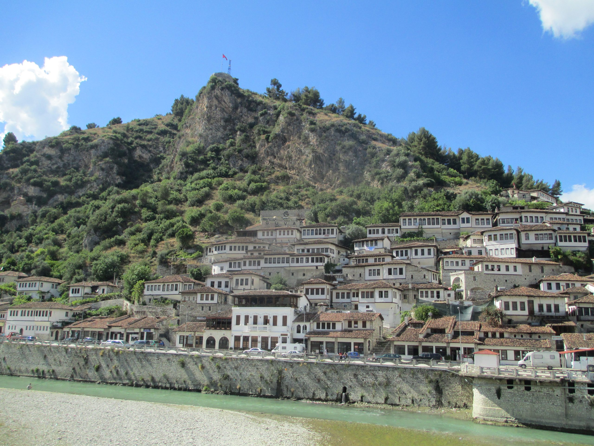
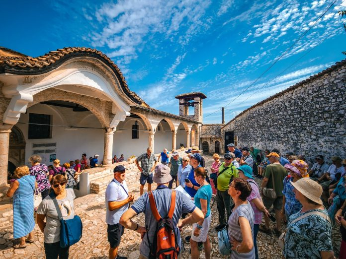
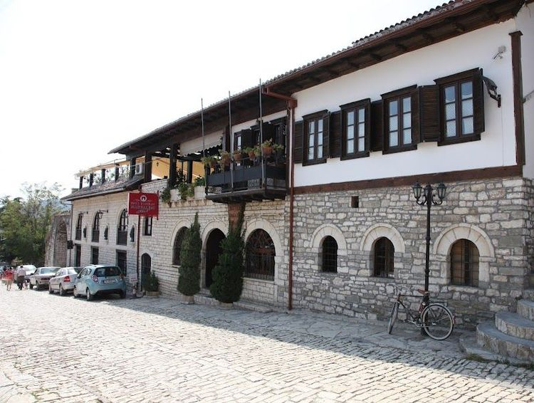

1 Day in Berat
📍 Albania | 🕒 1 Day
Berat, known as the "City of a Thousand Windows", is one of Albania’s most beautiful historic cities and part of UNESCO heritage.
💰 Price: €65 / person
🎒 Included: Transport, Guide, Lunch
📅 Detailed Itinerary
-
Day 1 – Explore Berat
08:00 – Departure from Tirana
10:00 – Arrival at Berat Castle
11:30 – Onufri Museum
13:00 – Traditional Lunch
15:00 – Mangalem & Gorica
17:00 – Free Time & Photos
18:30 – Return